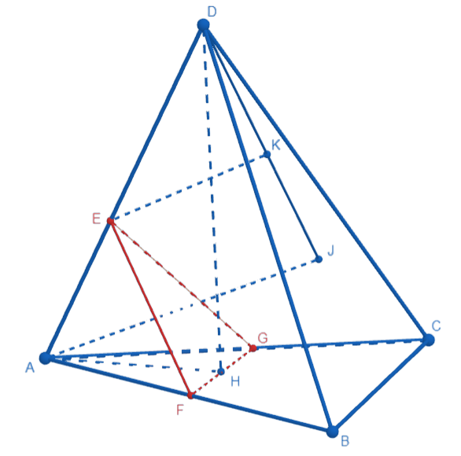

Основные методы решения стереометрических задач
Поэтапно-вычислительный метод является традиционным, чаще всего при решении стереометрических задач используют именно его.
Данный метод заключается в том, что решение задачи происходит с помощью поэтапных вычислений отдельных промежуточных величин, которые затем, дополняя друг друга и постепенно связываясь между собой, помогают дать ответ на вопрос, поставленный изначально. Метод основан на аксиомах и теоремах стереометрии. Но вычисления производятся с помощью теории не только из стереометрии, но и из планиметрии, так как зачастую удобнее перенести некоторые элементы чертежа из трехмерного пространства в двумерное.
Поэтапно-вычислительный метод требует отличного знания теории, умения правильно строить чертежи, а также развитого пространственного воображения.
В правильной пирамиде DABC с вершиной D и треугольным основанием ABC сторона основания равна 27, а высота равна 9. На ребрах AB, AC и AD отмечены соответственно точки F, G и E такие, что AF=AG=AD, AE=12.
а) Докажите, что плоскости FGE и DBC параллельны.
б) Найдите объем пирамиды EDBC.
а) Пусть DH – высота пирамиды. Так как высота правильной пирамиды проецируется в точку пересечения высот (медиан, биссектрис) ее основания, то AH – высота, медиана, биссектриса ∆ABC. Так как центром описанной около треугольника окружности является точка, в которой пересекаются все серединные перпендикуляры, проведённые к сторонам треугольника, то
По теореме Пифагора из п/у ∆ADH:
Следовательно DE=6, AF=AG=AD=18.
Заметим соотношения:
Следовательно, ∆AEF~∆ADB ⇒ EF || DB
Из того, что AF=AG=18 и AB=AC=27 следует, что CC=FB=9.
Из соотношений
следовательно, .
Имеем:
ч.т.д.
б)
По теореме косинуса в :
По основному тригонометрическому тождеству:
Пусть
В основании пирамиды SABCD с вершиной S лежит прямоугольник со сторонами AB=12 и BC=8. Боковые ребра SA, SB и SD равны 16√2, 4√41 и 24 соответственно. Точка O – точка пересечения диагоналей основания. Найдите угол между плоскостью ASD и прямой SO.
Два шара касаются друг друга внутренним образом. Радиус меньшего шара, расположенного внутри большего, в 2 раза меньше радиуса второго шара. Плоскость γ перпендикулярна прямой, проходящей через центры этих шаров. Расстояние от плоскости γ до центра меньшего шара равно 2, а площадь сечения меньшего шара этой плоскостью равна 12. Найдите площадь сечения большего шара плоскостью γ.